Exercice 2, Orthocentre d'un triangle (6 pts)
Contents
2.1) Projection
Test de "projection" :°
A=[1 2]; B=[2 0]; C=[0 0];
x1 = A(1); y1 = A(2); x3 = C(1); x2 = B(1); y2 = B(2); y3 = C(2);
x=[x1, x2, x3]; y=[y1, y2, y3]; P_test = projection(x, y)
On voit que 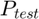 est bien colinéaire au vecteur qui engendre 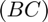 En effet 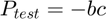 (voir définition de bc ci-dessous)
2.2) Triangle
Test de triangle:
A=[1 2]; B=[0 0]; C=[2 0]; x1 = A(1); y1 = A(2); x3 = C(1); x2 = B(1); y2 = B(2); y3 = C(2);
x=[x1, x2, x3]; y=[y1, y2, y3]; triangle(x, y)
Implémentations
Projection()
Avec a les points 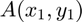, 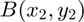 et 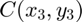 où 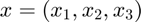 et 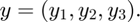
La fonction doit retourner le point 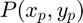 qui correspond à la projection du point sur la droite , i.e. 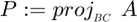
function P=projection(x,y) % Les paramètres sont des vecteurs lignes ! % % Retourne les coordonnées de la projection de A sur BC % Le type de retour est un vecteur ligne de R^2 également A=[x(1) y(1)]'; B=[x(2), y(2)]'; C=[x(3), y(3)]'; % On travail avec des vecteurs colonnes bc =(C-B); bc = (bc/norm(bc)); % Représente le vecteur directeur (unitaire) de la droite (BC) P = dot(A, bc)*bc; % Projection de A sur bc end % Surcharge de projection(x, y) en donnant à la place les 3 points du triangle % function P=proj(A, B, C) x = [A(1), B(1), C(1)]; y = [A(2), B(2), C(2)]; P = projection(x, y); end
P_test =
1
0
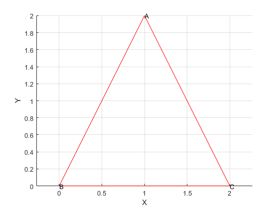 K =
2
0
aC =
-1/2
bC =
1
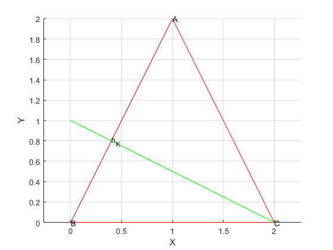 K =
0
0
aB =
0
bB =
0
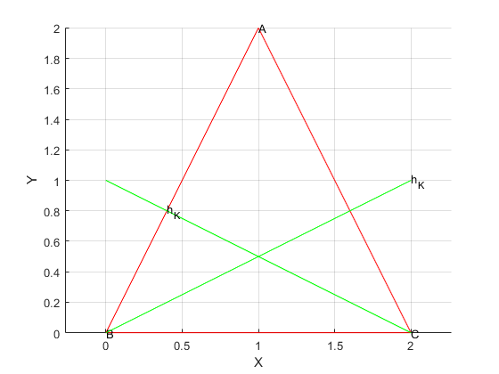 K =
1
2
aA =
0
bA =
0
Triangle()
Tout d'abord implémentons une fonction qui, donné 3 points d'un triangle, peut dessiner la hauteur
function [a, b] = hauteur(K, B, C) % Retourne la hauteur du triangle qui part de K et coupe BC perpendiculairement. % % La hauteur d'un triangle en un point K(K_x, K_y) est juste une droite qui passe par K et par % la projection orthogonale de K sur son côté opposé. % % ==> Ce qui définit 2 points de la droite ==> ce qui définit mathématiquement son équation (a*x + b). % ==> E.g. pour K=(0, 0) qui a 0 en coordonnée y, on voit que le paramètre b de sa hauteur doit être 0, % (on doit avoir f(K_x) = K_y, avec f(x) = ax+b) % et on peut donc déduire "a" comme x_K/y_K où (x_K, y_K) est la coordonnée de h_K, l'intersection entre la hauteur et le côté opposé % b = 0; a=0; Kx= K(1); Ky=K(2); hK = proj(K, B, C); xK = hK(1); yK = hK(2); % Si K = (0, 0) sa projection donnera (0, 0) (car c'est une application linéaire, donc f(0)=0 toujours) % il faut donc déterminer hK autrement: % on prend simplement le vecteur normal (n) au côté opposé, qu'on fait partir depuis l'origine car K=(0,0) i.e. K est l'origine. K if isNull(Kx) && isNull(Ky) bc = C-B; n = [-bc(2), bc(1)]; plot([K(1), n(1)], [K(2), n(2)], '-g') text(n(1), n(2), 'h_K') elseif isNull(xK - Kx) bc = C-B; n = [-bc(2) bc(1)]'; f = @(x) (K + x*n) ; % on doit trouver x tel que le vecteur K(K+x*n) est orthogonal à bc % i.e. <(K - (K + x*n)), bc> = 0, ce qui ce détermine x de la manière suivante: % x* (bc_2 * bc_1) + bc_1* bc_2 % ce qui est équvilent à x = - bc_2* bc_1 / (bc_1 * bc_2 ) = -1, on a donc : % tmp=f(-1); hK = [tmp(1), tmp(2)]; plot([K(1), hK(1)], [K(2), hK(2)], '-g') text(hK(1), hK(2), 'h_K') else hK = proj(K, B, C); xK = hK(1); yK = hK(2); if ~isNull(Kx) a = (yK - Ky) / (xK - Kx); b = (yK - (a*xK)); elseif ~isNull(xK) % si Kx = 0, on détermine tout de suite a a= yK/xK; end f = @(x) (a*x + b); interv = [min([Kx, B(1), C(1)]), max([Kx, B(1), C(1)])]; fplot(f, interv, '-g') text(xK, yK, 'h_K'); end end
Puis une pour calculer et dessiner l'orhtocentre d'un triangle.
function O=orhtoc(x, y, aK, bK) % Détermine les coordonnées O=(Ox, Oy) de l'orthocentre du triangle ABC (A=(x1, y1) etc...), % en connaissant la condition d'appartenance à la hauteur issue de A. % aK * x + bK est l'équation de la hauteur issue du point K (différent de A) % % Si on combine la condition d'appartenance à la hauteur issue de A et % l'équation de la hauteur issue de K, on obtient un système d'équations à 2 inconnues % (X,Y) i.e. la position de l'orthocentre O % % PS: on remarque que la condition d'appartenance d'un point M à la hauteur de A revient à imposer la condition que le vecteur AM soit orthogonal au vecteur BC (produit scalaire nul) % (on peut donc la dériver à partir des points A,B et C) % Une fois mis sous la forme matriciel, le système prend la forme [M | res] où M et res sont définis de la manière suivante: M = horzcat([x(2) - x(3), aK]', [y(2) - y(3), -1]'); res = [(x(1)*(x(2) - x(3))) + (y(1)*(y(2) - y(3))); -bK]; MAugm = horzcat(M, res) % Il ne suffit plus qu'à échelonner réduire le système et on obtient O % rref_MAugm = rref(MAugm) O = rref_MAugm(:,size(rref_MAugm, 2)); plot(O(1), O(2), 'hr') text(O(1), O(2), ' Orthocentre'); end
MAugm =
-2 0 -2
-1/2 -1 -1
rref_MAugm =
1 0 1
0 1 1/2
ortho =
1
1/2
On a les points , et où et La fonction doit dessiner le triangle ainsi que dessiner ses 3 hauteurs (que l'on nommera O).
function triangle(x,y)
% Les paramètres sont des vecteurs lignes ! A=[x(1) y(1)]'; B=[x(2), y(2)]'; C=[x(3), y(3)]'; % On travail avec des vecteurs colonnes x1=A(1); x2=B(1); x3=C(1); y1=A(2); y2=B(2); y3=B(2); x(4) = x1; y(4) = y1; % et on rajoute un dernier point égal au 1er pour "terminer" le dessin du triangle hold on axis equal plot(x, y, '-r'); xlabel('X'); ylabel('Y'); grid on; format rat text(x1, y1, 'A'); text(x2, y2, 'B'); text(x3, y3, 'C') [aC, bC] = hauteur(C, A, B) [aB, bB] = hauteur(B, A, C) [aA, bA] = hauteur(A, B, C)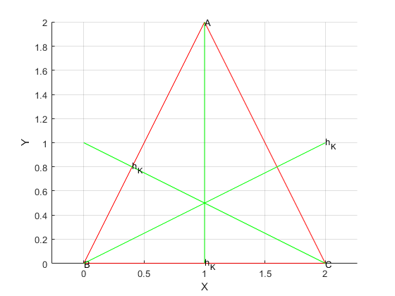
%% % si K = 0 hauteur() ne donne pas les bon a et b pour l'équation de la droite on doit donc faire attention % de ne pas les utiliser en paramètre pour l'appel ci-dessous: if B == [0 0] ortho = orhtoc(x, y, aC, bC) else ortho = orhtoc(x, y, aB, bB) end % On vérifie que le point appartient aux 3 hauteur: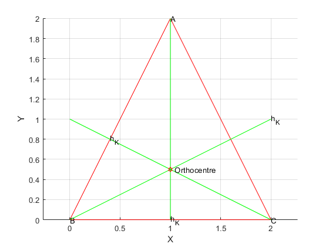
%% % Tout d'abord on voit immédiatement sur la figure que O appartient à la hauteur issue de A % (il est immédiatement sous A) % (et car l'équation de son appartenance était ce qui nous a permis de le trouver et il en est de même % pour celle issue de C) % % Pour la dernière une simple observation de la figue généré nous permet d'affirmer que la dernière hauteur passe % bien par l'orthocentre calculé % hold off
end